Combine bellos paisajes naturales con lugares sagrados para tres de las principales religiones del mundo y
tendrá Israel. Lo que algunos llamarían el corazón de Oriente Próximo tiene mucho que ofrecer a los viajeros.
En Tel Aviv, el centro cosmopolita de la costa mediterránea de Israel, las visitas turísticas destacan la
arquitectura incluida en la lista de la UNESCO y los lugares de interés culinario, mientras que la región del
Mar Muerto cuenta con el oasis de Ein Gedi, la antigua Masada y, por supuesto, uno de los balnearios
naturales más antiguos del mundo. Nazaret, Jericó, Masada y Belén son populares excursiones de un día tanto
desde Tel Aviv como desde Jerusalén, perfectas para quienes deseen sumergirse en la historia religiosa de la
región.
Las 12 mejores atracciones en Israel
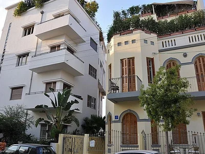
Neve Tzedek
El barrio original de Tel Aviv, Neve Tzedek fue el primer asentamiento
judío
fuera del antiguo puerto de Jaffa cuando fue creado en 1878. Después de un período de declive, ahora ha vuelto a
la vida como un distrito que se lo lleva a ser considerado ...LEER +
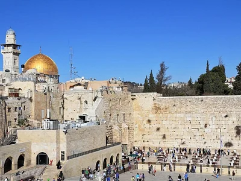
Muro de las lamentaciones
Una sinagoga al aire libre donde los fieles recitan sus oraciones. El histórico Muro Occidental de
Israel (Muro
de las Lamentaciones) es donde los viajeros vienen a besar piedras de color oro pálido del que se conoce como el
color de... LEER +
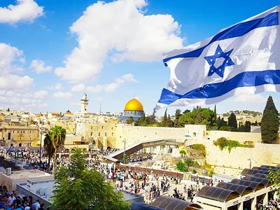
Ciudad vieja de Jerusalén
Las antiguas calles serpenteantes de la Ciudad Vieja de Jerusalén albergan algunos de los enclaves
religiosos
más sagrados del mundo para judíos, musulmanes y cristianos, como son el Monte del Templo, la Iglesia del que
salieron los Ap...LEER +
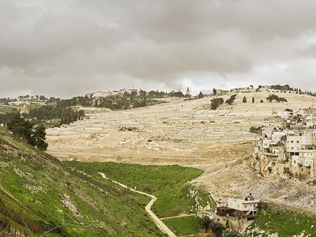
Kidron Valley
Situado en las afueras de la Ciudad Vieja de Jerusalén, el pintoresco Valle de Cedrón es un antiguo
cementerio
famoso por su importancia religiosa y belleza natural. El Valle divide el Monte del Templo y el Monte de las
laderas del sur cono ...LEER +
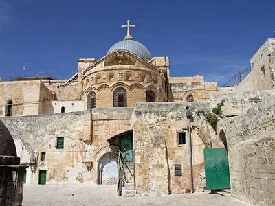
Vía de la Cruz
El camino de la Cruz Vía Dolorosa es un antiguo camino en el casco antiguo de Jerusalén, donde se
cree que
Jesús cargó el
madero hasta su ejecución. También conocida en el catolicismo como las Estaciones de la Cruz y más de un...LEER
+
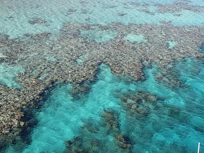
Reserva Natural de Coral Beach
Hogar de algunos arrecifes de coral tropicales más septentrionales del mundo, la Reserva Natural de
Coral Beach
ofrece el mejor esnórquel de Eilat, y probablemente el de Israel. Los parches de hierbas marinas que se
encuen...LEER +
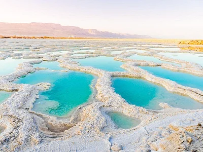
Mar Muerto
El Mar Muerto, hogar del punto más bajo del mundo a 383 metros (1269 pies) por debajo del nivel del
mar,
también se clasifica como uno de los cuerpos de agua más salados del mundo. Esta hipersalinidad que es tan
exclusiv... LEER +
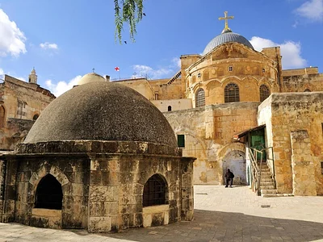
Iglesia del Santo Sepulcro
La Iglesia del Santo Sepulcro en la Ciudad Vieja de Jerusalén se asienta en lo que se cree que es
el lugar de
la crucifixión, sepultura y resurrección de Jesús. La Iglesia es el lugar más sagrado del cristianismo, se
encuentra aquí en... LEER +
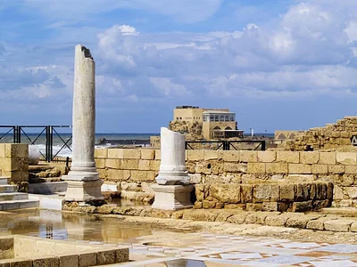
Cesarea
Con un enorme teatro de la época Romana, un antiguo acueducto que enmarca una playa dorada y mucho
más, Cesarea
alberga algunas de las ruinas más sorprendentes de Israel. Construida por Herodes el Grande en el año de...LEER
+
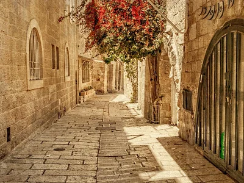
Barrio Judío de Jerusalén
Hogar del Muro Occidental, el lugar más sagrado del judaísmo, así como sinagogas, escuelas
religiosas y un
tramo de la época bizantina de la antigua Cardo, el barrio judío de Jerusalén es uno de los cuatro barrios más
elegantes y tupidos
...LEER +
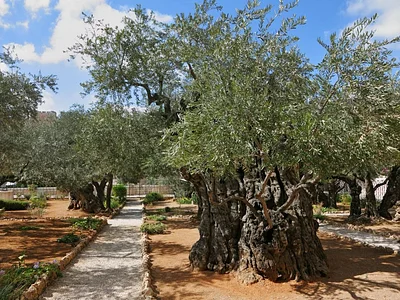
Jardín de Getsemaní
Según la fe cristiana Jesús oró en el jardín de Getsemaní la noche antes de su arresto. Hoy en día,
la Iglesia
de Todas las Naciones custodia este lugar sagrado a los pies del Monte de los Olivos, donde los frailes
franciscanos para la iglesia...LEER +
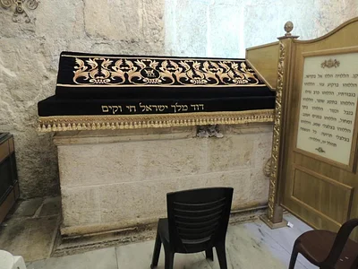
Tumba del Rey David
Algunos consideran que la tumba del Rey David, en el lugar sagrado del Monte Sión de Jerusalén, es
el lugar de
enterramiento del Rey David de Israel, pero se debate si realmente fue enterrado allí. Independientemente de una
más...LEER +